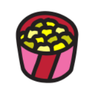

<div id="main_content">

    <section class="title_section">
        <div>
            
        </div>
        <h1>HOME</h1>
        <div>
            
            
            
            
        </div>
    </section>
    <div id="parallax_main"></div>
    <div id="parallax_games_1"></div>
    <div id="parallax_games_2"></div>
    <div id="parallax_games_3"></div>
    <div id="parallax_games_4"></div>
    <div id="parallax_games_5"></div>
    <div id="parallax_games_6"></div>
    <div id="parallax_games_7"></div>
    <div id="parallax_games_8"></div>
    <div id="parallax_games_9"></div>
    <div class="left_div">
        <h1 id="games_h_1">LOS MEJORES VIDEOJUEGOS</h1>
    </div>
    <div class="right_div">
        <h1 id="games_h_2">Y SAGAS LEGENDARIAS</h1>
    </div>

    <div class="center_div">
        <section class="series_section">
            <h1>SERIES</h1>
            <div>
                
            </div>
        </section>
    </div>
    <div id="parallax_series_1"></div>
    <div id="parallax_series_2"></div>
    <div id="parallax_series_3"></div>
    <div id="parallax_series_4"></div>
    <div id="parallax_series_5"></div>
    <div id="parallax_series_6"></div>
    <div id="parallax_series_7"></div>
    <div id="parallax_series_8"></div>
    <div id="parallax_series_9"></div>
    <div class="left_div">
        <h1 id="series_h_1">LAS SERIES MAS POPULARES</h1>
    </div>
    <div class="right_div">
        <h1 id="series_h_2">Y DESTACADAS</h1>
    </div>

    <div class="center_div">
        <section class="films_section">
            <h1>PELÍCULAS</h1>
            <div>
                
            </div>
        </section>
    </div>
    <div id="parallax_films_1"></div>
    <div id="parallax_films_2"></div>
    <div id="parallax_films_3"></div>
    <div id="parallax_films_4"></div>
    <div id="parallax_films_5"></div>
    <div id="parallax_films_6"></div>
    <div id="parallax_films_7"></div>
    <div id="parallax_films_8"></div>
    <div id="parallax_films_9"></div>
    <div class="left_div">
        <h1 id="films_h_1">PELÍCULAS INOLVIDABLES</h1>
    </div>
    <div class="right_div">
        <h1 id="films_h_2">E IMPRESCINDIBLES</h1>
    </div>

    <div class="center_div">
        <section class="final_section">
            <h1>Y MUCHO MÁS</h1>
            <div>
                
                
                
                
            </div>
        </section>
    </div>

    <!--
    <p>
        Entertainment es un sitio web dedicado a proporcionar información de calidad sobre películas, videojuegos,
        series
        y objetos de interés. Nuestro objetivo es brindar a nuestros visitantes una experiencia de usuario excepcional
        y ofrecer contenido relevante y preciso.
    </p>
    <p>
        Si eres un fanático del entretenimiento y estás buscando un sitio web confiable para obtener información y
        adquirir objetos de calidad, no busques más allá de Entertainment. ¡Visítanos hoy mismo y comienza a explorar
        nuestro amplio catálogo de contenido!
    </p>

    <p>El propósito de este sitio es mostrar las habilidades del autor en los ámbitos de:</p>
    <ul>
        <li>Diseño de cada componente.</li>
        <li>Elección de paleta de colores.</li>
        <li>Optimización de código (html/css/js).</li>
        <li>Capacidad de orden de información.</li>
        <li>UI/UX.</li>
        <li>Full Responsive sites.</li>
        <li>Creación de componentes propios.</li>
    </ul>
    <p>
        Cabe destacar que todo aquí presente fue diseñado, creado, escrito y producido por el autor, nada se extrajo
        de la web a excepción de las imágenes o logos.
    </p>
    <p>
        Mas abajo, en el footer de este sitio web, podrás encontrar información adicional sobre documentación de estudio
        y proyectos del autor.
    </p>
    <p>¡Que disfrutes del contenido! 😁</p> -->
</div>